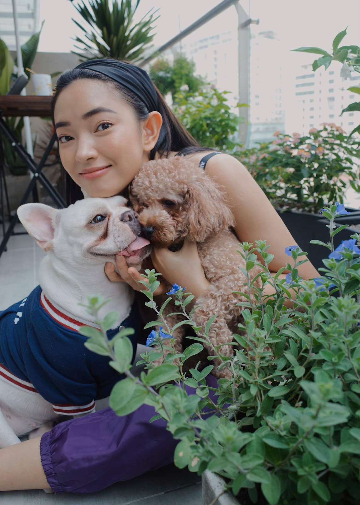
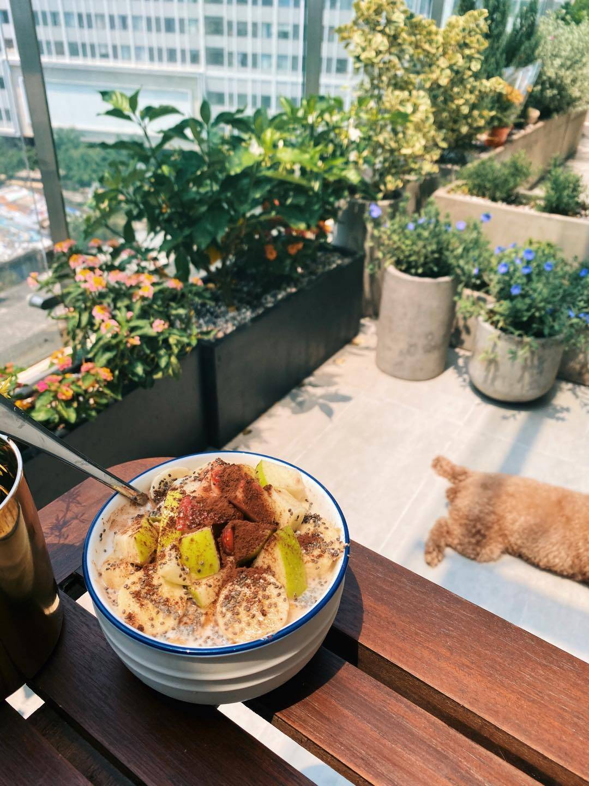
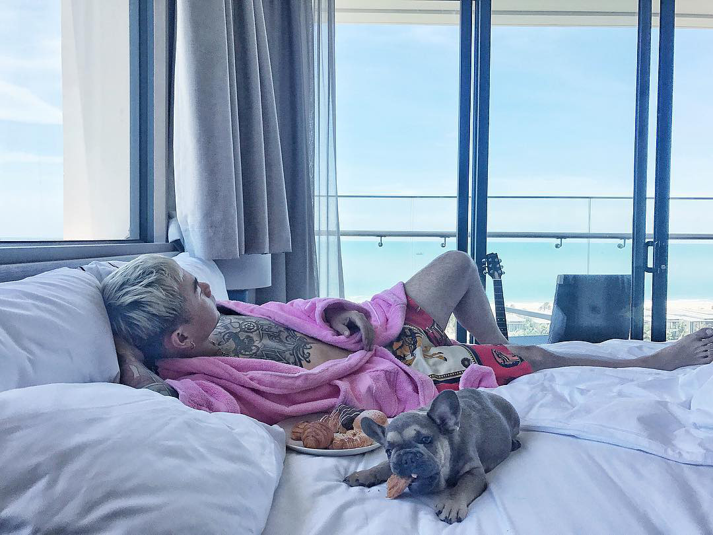
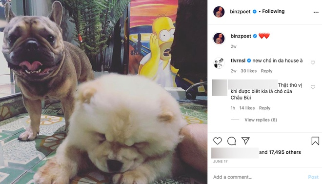

Gần đây, thông tin Binz và Châu Bùi hẹn hò đang gây xôn xao mạng xã hội. Ngoài những màn thả thính đỉnh cao thì cặp đôi này còn sở hữu những chú cún đáng yêu siêu cấp khiến fan vô cùng thích thú. Hãy cùng Mini Pet điểm mặt những “người bạn” dễ thương này nhé!
Châu Bùi được biết đến là 1 trong những fashionista đình đám của làng thời trang Việt 2 năm gần đây. Cô sở hữu gu ăn mặc phong cách, thần thái đỉnh cao và nguồn năng lượng vô cùng tích cực mọi lúc mọi nơi. Dù rất bận rộn với công việc hàng ngày nhưng Châu Bùi cũng đang là bà mẹ 1 nách 2 con với hai chú cún: Santa (Bull Pháp) và Beedo (Poodle).
Châu Bùi hài hước tự nhận mình là "chị giúp việc" của Santa và Beedoo. Mỗi ngày, dù bận rộn đến mấy cô cũng cố gắng dậy sớm đi chợ rồi về nhà tự nấu đồ ăn clean cho 2 bé. Sau đó dành ra 5-10 phút chơi với chúng rồi mới đi làm. Trong khi đó, Santa và Beedoo chỉ việc ngủ ngủ ngủ và thích thì mới thèm để mặt đến "chị giúp việc" thôi.
"Giờ đã biết cảm giác đi đâu cũng muốn về thật nhanh vì có 2 đứa ở nhà đợi mẹ về!" - Châu Bùi chia sẻ về 2 em boss của mình.Thậm chí cô nàng còn có những bộ hình lookbook xịn sò cùng 2 cún cưng nữa.
Trái với hình ảnh cool ngầu mà fan thường thấy trong các MV ca nhạc hay các chương trình gần đây, Binz ngoài đời rất thân thiện và vui tính. Đặc biệt, chàng bad boy này còn sở hữu 1 chú Bull Pháp màu nâu đen (Trâu) và 1 chú chó mini Nhật tên Bí.
Anh thường xuyên chụp ảnh selfie và thậm chí cho chúng đi chung trong những chuyến du lịch sang chảnh của mình.
Thú vị hơn nữa vào tháng 7 vừa qua, người hâm mộ tinh ý nhận ra Bí xuất hiện trong 1 story trên Instagram của Châu Bùi với caption “Bí béo phì rồi”. Nhiều fan nghi ngờ rằng cả hai đang tận hưởng 1 buổi tối bên nhau giữa lúc chuyện hẹn hò rầm rộ và chú chó này đích thị là "bằng chứng" tình cảm của cặp đôi.
Bạn nghĩ sao nếu một ngày đẹp trời 4 chú cún dễ thương này được về chung một nhà? Hãy cùng chia sẻ bình luận của mình với Mini pet ngay nhé!